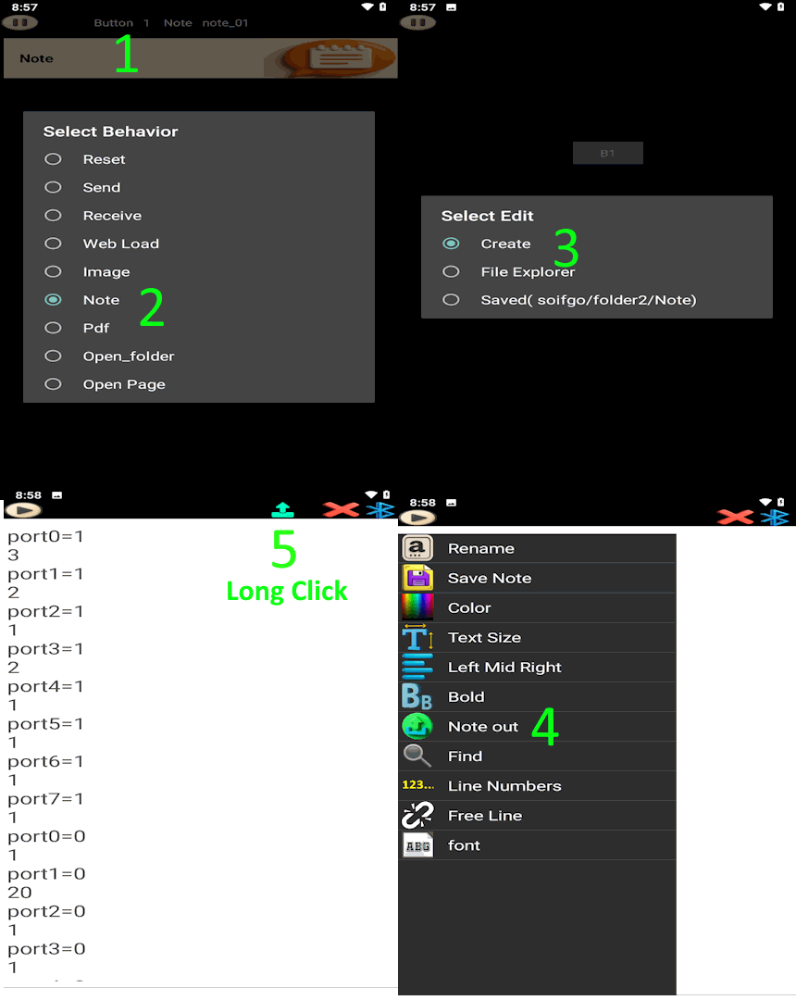
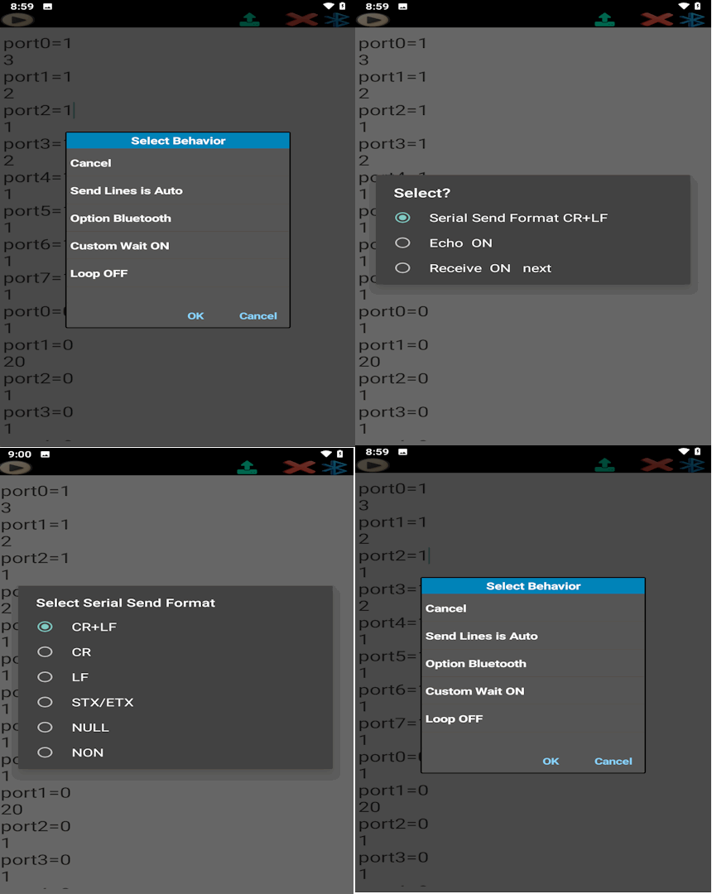
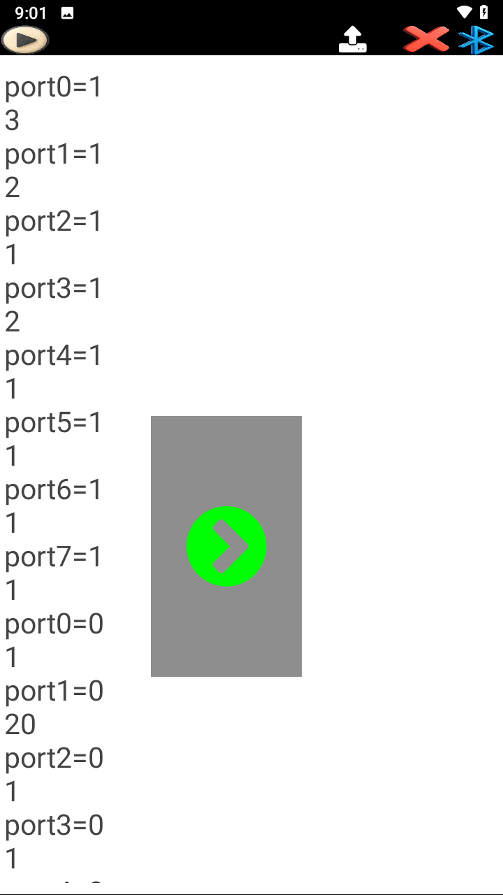

The Note feature in SoifGo, with both send and receive functionality, is designed to help you build automation processes using Bluetooth Serial, API, and MQTT communication modes. For example, if you send the joint angles of a three‑axis robotic arm (with encoders) over Bluetooth Serial and store them in a Note, you can later send the same recorded joint values back, and the robot will repeat the exact previous motion.
In another example, if the receiver is a CNC machine and you load CNC codes into a Note, sending that Note will cause the CNC to start executing the commands.
A wide range of creative workflows can be built this way—limited only by the user's imagination.
First, create a button and set its behavior to Note. Choose Create to generate a blank note. Then go to the Play page, click the button to open the note, and from the menu or play icon select Note send to see the list of communication methods. For example, choose Bluetooth and return to the note. Now you can start writing the required commands line by line.
At the top of the page, you will see the Send icon. By long-clicking on this icon, a list of settings will appear:
In this method, every line is sent with the same delay. You simply write the commands normally, and the system applies a uniform delay between each line.
Example:
Here, each command line will be sent one after another with the same delay (e.g., 2 seconds).
In our method, wherever you need a custom delay before executing a command, simply write the desired delay time in seconds as wait=4. This way, upon seeing your command, the system will start counting down and then proceed to send the remaining lines.
Example:
Each communication method (Bluetooth, API, MQTT) has its own specific settings. Below are the main options for Bluetooth (similar concepts apply to API and MQTT):
CR+LF, CR, NULL, etc.next or NEXT after each command. This is useful for tasks with uncertain completion times. Example: A conveyor or crane may take 2–30 seconds to finish moving a heavy load. Once the task is complete, the destination sends NEXT back, signaling SoifGo to continue with the next line.These settings allow you to adapt Note SEND for different devices and scenarios, ensuring both reliability and flexibility in communication.



For Bluetooth receiving, you must tap the Bluetooth icon to establish the connection. Each time a text message is sent, it is immediately received and added as a new line in the note.
In API receiving mode, any incoming value or size change is automatically added as a new line in the note.
In MQTT receiving mode, every published value or payload change is captured and appended to the note in real time.
Note RECEIVE can also be used as a real‑time logger for monitoring incoming data from devices.
Additionally, at the top-right of the screen, the Play/Pause icon allows you to pause or resume receiving with a single tap. A long press on this icon opens the settings for API and MQTT.
This example shows you how to practice Note SEND and Note RECEIVE in SoifGo without needing any hardware. All you need is:
The simulator creates a virtual robot point inside a box. You can move the point with your mouse (SEND mode), or let SoifGo move it by sending X/Y coordinates (RECEIVE mode).
Download the simulator file:
📦 Download soifgo_note_send_receive_simulator.zipYou can also open the simulator directly in your browser (PC only):
🖥️ Open soifgo_note_send_receive_simulator.htmlUse this simulator to practice Note SEND and Note RECEIVE with SoifGo over Bluetooth.
Open the HTML file on your computer. You will see two sections:
The simulator uses the Web Serial API, so it works only on desktop browsers.
On your PC:
Inside SoifGo:
After receiving and sending in SoifGo, select Bluetooth as the Note send/receive method.
In SoifGo, set the Note to Note SEND with Bluetooth, then write lines like:
Then press the Send icon in SoifGo.
In the simulator on the PC:
This simulates controlling a robot arm, CNC head, or any XY device.
In the simulator on the PC:
The simulator sends coordinates like:
In SoifGo:
This simulates recording a robot's motion path with SoifGo.
With this simple setup, you can practice:
The HTML simulator file can be executed on a PC and used as a training tool together with SoifGo.